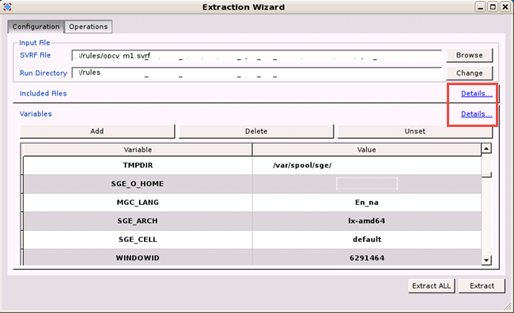
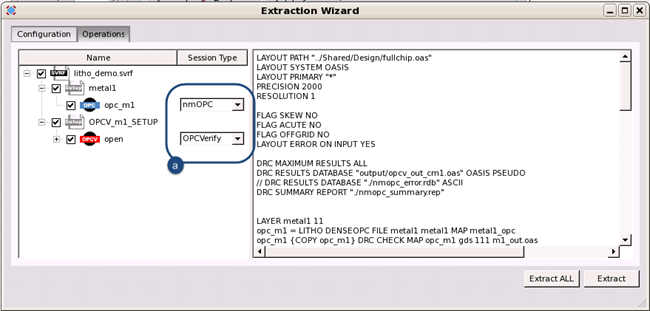

You can extract
the text of a litho setup file from SVRF using the File menu
of the RET Flow Tool. The RET Flow tool not only extracts the LITHO
FILE block, but also automatically loads it into the appropriate
session tool. For example, if a Calibre OPCverify LITHO block is extracted,
it is automatically added as an OPCverify session.
Restrictions and Limitations
Procedure
- In the RET Flow Tool window,
perform one of the following:
To extract the entire
contents from an existing SVRF file, either click Extract in the viewer,
or select . When the SVRF File dialog
box appears, specify the SVRF for extraction and Open.
To extract a portion of
code from an existing SVRF file, select .
When
the Extraction Wizard dialog box appears, specify the SVRF file
or run directory to locate the SVRF file for extraction.
(Optional)
Expand the Included Files and Variables sections by clicking the associated
Details link. Use these sections to verify your working environment
is configured properly (all required files are loaded, and all variables
are set correctly).

The litho setup files (LITHO
FILE command blocks) appear in the Operations tab
of the Extraction Wizard. You can select the specific setup file
to extract as well as change the type of session to import to by
selecting from the adjacent pulldown menu (a in Figure 1).
Figure 1. Extraction Wizard
- View the contents of the imported
SVRF by clicking the SVRF tab
in the RET Flow Tool window.
The SVRF tab displays the full
contents of the SVRF rule file as well as the program hierarchy
in the left pane.
- To add
derived layers (that is, layers generated by running the SVRF file):
For
a specific layer, right click on a layer in the SVRF tab
and select Generate Layer; the RET Flow Tool
only generates that layer.
Note: You can use the SVRF tab Find field
to search the list of rule file layers by name. The dropdown arrow
to the right of the field allows you optionally to match by whole
words and case.
For all derived
layers, switch to the Flow tab and click
the Generate button to have the RET Flow
Tool generate any layers marked as “8192-Dummy Layer.”